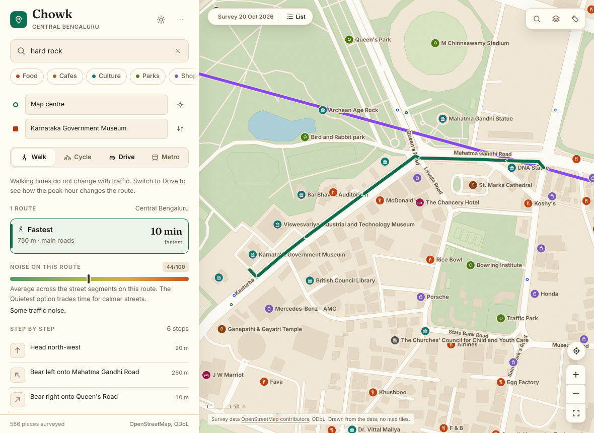
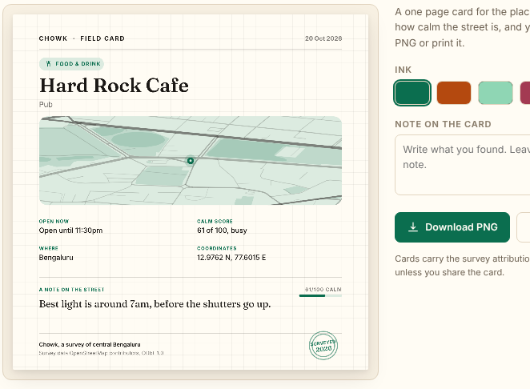

Chowk puts a noise grade on every street in central Bengaluru. Pick a route and you see the average next to the quietest option, before you walk it.
No account. No advertising. Works offline once loaded.

It has no way to tell you that the lane behind is calm, that the crossing has no signal, or that the footpath ends. Speed is the only number it shows, so speed becomes the only thing you can choose.
And when you save a place, you are trusting a list you cannot search, cannot export, and cannot take with you when the network drops.
Twelve categories, streets by name, metro stations by line. Results are ranked from the centre of your map, not from a profile you never agreed to.
Walk, cycle, drive or metro, with time, distance and the noise on the way. Step free routing skips stairs. The metro option shows the fare and the station names.
Save it to a list, write a note about the entrance or the queue, print a field card, and export the lot as a file whenever you want.
Every one of the 395 surveyed streets carries a noise grade. Turn on the quiet layer to paint the map by calmness, or ask for the quietest route and trade a minute for a street you can talk on.
Each route card shows its average noise and compares it with the quietest option. The number is an estimate from the survey, and the app says so rather than pretending to measure live traffic.
Report a broken pavement, a missing step free entrance or an unsafe crossing. It stays on the map until someone marks it fixed, so the survey gets better with use instead of resetting.
A printable card for any place: a drawn street plan, the calm score, the hours, and your own note. Download it as an image or print it on paper and hand it to someone.
Step free routing avoids stairs on the walking graph, and a filter shows only places tagged step free. Twelve places in the survey carry the tag, and the rest are honest about not having it.
Saved places and notes live in your browser, searchable, exportable as a JSON file. No account to lose, no list that disappears from the app, no sync that quietly drops the newest places.
Move the departure slider to see how a weekday changes drive times. It is a published curve, not live traffic, and the app prints the reasoning next to the slider rather than hiding it.
Everything else you expect is here too, because parity is the price of entry rather than a feature:

A field card fits on one page. The street plan is drawn from the same OpenStreetMap data as the map, the calm score comes from the survey, and your note is yours.
Four inks. Download a PNG, or print it and stick it on the studio wall next to the bus timetable it replaces.
| Tier | Who it is for | Price | What you get |
|---|---|---|---|
| Survey | Anyone | Free | The whole map loop, all layers, saves, notes, export, one field card at a time. |
| Field kit | One person who prints and shares | ₹499 once | Unlimited card packs, four inks, an A4 print set, note archive import. |
| Neighbourhood | A group, school or association | ₹4,999 a year | A shared fixes layer, a custom survey extent, and named attribution on the cards. |
No subscription for the map itself, no per seat pricing, no card on file for the free tier because there is no account. One email before a yearly renewal, one click to cancel.
No. Chowk draws its own map from OpenStreetMap data, covers central Bengaluru only, and is not affiliated with any map provider. There are no map tiles, no satellite imagery and no street photographs. Outside the survey the app says it has nothing rather than guessing.
From the road class and the survey notes on each street: a trunk road scores loud, a residential lane scores quiet, and the number is averaged along the route. It is an estimate. The app labels it as one everywhere it appears.
Yes, once it has loaded. The map data is local, and your saved places and notes sit in the browser. There is no server to lose.
Not yet. You can export from Chowk as JSON today. Import is on the list, and the list is public in the project.
Because the survey does not have them, and inventing them would be exactly the kind of thing this project is against. A calm score, the hours and the note you wrote are the useful part.
It stays in your browser. Settings has one button that deletes everything, no email necessary. Nothing is sent anywhere, because there is nowhere to send it.
Central Bengaluru, from the data up.